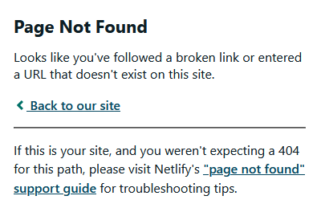
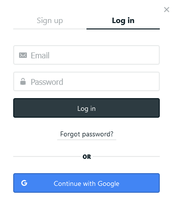

Literate programming tools like R Markdown and Quarto make it easy to convert analyses into aesthetic documents, dashbaords, and websites for public sharing. But what if you don’t want your results too public?
I recently was working on a project that required me to set up a large number of dashboards with similar content but different data for about 10 small, separate organizations. As I considered by tech stack, I found that many Quarto users were asking similar questions, but understandably the Quarto team had no one slam-dunk answer because authentication management (a serving / hosting problem) would be a substantial scope creep beyond the goals and core functionality of Quarto (an open-source publishing system).
After evaluating my options, I found the best solution for my use case was role-based access controls with Netlify Identity. In this post, I’ll briefly describe how this solution works, how to set it up, and some of the pros and cons.
Demo
Using a minimal Netlify Identity set-up, you can be up and running with the following UX in about 10 minutes. For this post, I show the true “minimum viable deployment”, although the styling and aesthetics could be made much fancier.
When users first visit your site’s homepage, they will be prompted that they need to sign-up or login to continue.

If users navigate to any other part of the site before logging in, they’ll receive an error message prompting them to return to the home screen. (This could be customized as you would a 404 Not Found error.)

After clicking either button, an in-browser popup modal allows them to sign up, login in, or request forgotten credentials.


The example above shows the option to create a custom login or use Google to authenticate. Netlify also allows for the options to use other free (e.g. GitHub, GitLab) or paid (e.g. Okta) third-party login services.
For new signups, Netlify can automatically trigger confirmation emails with customized content based on a templated text or HTML file in your repository.
Once logged in, the homepage then offers the option to log back out.

Otherwise, users can then proceed to the rest of the site as if it were publicly available.
Set Up
The basics of how Netlify Identity works are described at length in this blog post. If you decide to implement this solution, I recommend reading those official documents for a more robust mental model. In short, Netlify Identity works by attaching a token to each user after they log in. This user-specific token can be assigned different roles on the backend, and depending on which roles a user has, they can be redirected to (or gated from) seeing different content.
Setting up Netlify Identify requires a few small tweaks throughout your site:
- Add Javascript to each page to handle the JSON Web Tokens (JWTs) set by Identity. This is done most easily through the
_quarto.yml - Configure site redirects to response to the JWTs. This is contained in its own
_redirectsfile - Ensure you have a user interface that allows users to sign up and login, thus changing their JWTs and access. I put this in my
index.qmd
Then, finally, within the Netlify admin panel, you must:
- Configure the user signup workflow (e.g. by invitation, open sign-up)
- Assign users to roles that determine what content they can see
- Optionally, enable third-party forms of authentication (e.g. Google, GitHub)
Let’s take these one at a time.
Configure Role Authentiation
Netlify maintains an Identity widget that handles recognizing authenticated users and their roles from their JWTs. To inject this Javascript snippet into every page, open the _quarto.yml file and add the Javascript snippet to the include-in-header: key under the HTML format, e.g.:
format:
html:
include-in-header:
text: |
<script type="text/javascript" src="https://identity.netlify.com/v1/netlify-identity-widget.js"></script>
<script>
window.netlifyIdentity.on('login', (user) => {
window.netlifyIdentity.refresh(true).then(() => {
console.log(user);
});
});
window.netlifyIdentity.on('logout', (user) => {
window.location.href = '/login';
});
window.netlifyIdentity.init({ container: '#netlify' });
</script>Note, the official widget is injected using the src field of the first script tag.
Configure Site Redirects
Next, create a _redirects file at the top level of your project (or open the existing file) and add the following lines:
/login /
/* /:splat 200! Role=admin
/site_libs/* /site_libs/:splat 200!
/ / 200!
/* / 401!Syntax for the _redirects file is described here, but basically each line defines a rule with the structure:
<what was requested> <where to go> <the result to give> <conditional on role>And, like a case when statement, the first “matching” rule dominates.
So, the example above can roughly be read in English as:
If users go to the /login page, take them back to home
If users try to go anywhere else on my site and they have role admin, let them do that
If users try to go to the hompage of my site (regardless of their role), let them do that
If users otherwise try to go to other parts of the site (and they don't have admin), give an errorOf course, this could be further customized to set different rules for different subdirectories.
Create User Interface
To create the user interface for the login screen, I added code to inject a Netlify-maintained login widget to my site’s index.qmd, e.g.:
---
date: last-modified
---
# Home {.unnumbered}
<div data-netlify-identity-menu></div>
Welcome! Please sign in to view the dashboard.
If you are a first time user, please create a login and email [emilyriederer@gmail.com](mailto:emilyriederer@gmail.com?subject=Dashboard%20Access%20Request) to elevate your access.User Onboarding
After the changes above to your actual Quarto site, the rest of the work lies in the Netlify admin panel. For a small number of users, you can manually change their role in the user interface.

However, to work at any scale, you may need a more automated solution. For that, Netlify’s docs explain how to configure initial role assignment via lambda functions. However, out-of-the box functionality that I found to be lacking was assigning default roles for new users or the ability to configure basic logic such as assigning the same role to any new users onboarding from a certain email domain.
Is it for you?
Netlify Identity isn’t the perfect solution for all use cases, but for many small websites and blogs it’s possibly one of the lowest friction solutions available.
This solution is easy to set up initially, allows some degree of self-service for users (account set-up and password resets), user communication (email management), and third-party integration (e.g. authenticate with GitHub or Google). It also has a robust free tier, allowing 1K users to self register (and 5 registrations-by-invitation), and is a substantial step up over locking down HTML content with a single common password.
However, Netlify Identity is not a bullet-proof end-to-end security solution and could become painful or expensive at large scale. This solution, for example, doesn’t contemplate securing your website’s full “supply chain” (e.g. if the source code in in a public GitHub repo) and certainly is less secure than hosting your site completely within a sanboxed environment or intranet. For a large number of users, I also feel there’s a large opportunity to allow simple business rules to configure initial roles.
In summary, I would generally recommend Netlify Identity if you’re already using Netlify, expect a small number of users, and are comfortable adding friction to your sign-in process versus absolute security. For larger projects with higher usage and more bullet-proof security needs, it may be worth considering alternatives.